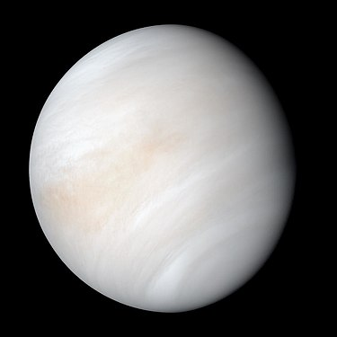

Die Venus ist mit einer durchschnittlichen Sonnenentfernung von 108 Millionen Kilometern der zweitinnerste und mit einem Durchmesser von ca. 12.100 Kilometern der drittkleinste Planet des Sonnensystems. Sie zählt zu den vier erdähnlichen Planeten, die auch terrestrische oder Gesteinsplaneten genannt werden. Die Venus ist der Planet, der auf seiner Umlaufbahn der Erdbahn mit einem minimalen Abstand von 38 Millionen Kilometern am nächsten kommt. Sie hat eine ähnliche Größe wie die Erde, unterscheidet sich aber in Bezug auf die Geologie und vor allem hinsichtlich ihrer Atmosphäre. Diese besteht zu 96 % aus Kohlenstoffdioxid und ihr Oberflächendruck ist 90-mal höher als auf der Erde. Nach dem Mond ist die Venus das hellste Gestirn am nächtlichen Himmel. Weil sie als einer der unteren Planeten nur am Morgen- oder Abendhimmel sichtbar ist und nie gegen Mitternacht, wird sie auch Morgenstern und Abendstern genannt. Schon mit einem kleinen Fernrohr ist sie auch am Taghimmel beobachtbar, manchmal sogar freiäugig. Doch auch bei Erdnähe (ca. alle 1½ Jahre) lassen sich nur die Wolkenstreifen der äußerst dichten Atmosphäre erkennen. Die Erkundung der Oberfläche erfordert Radar.
 1 23
4 5 6 7 8 9